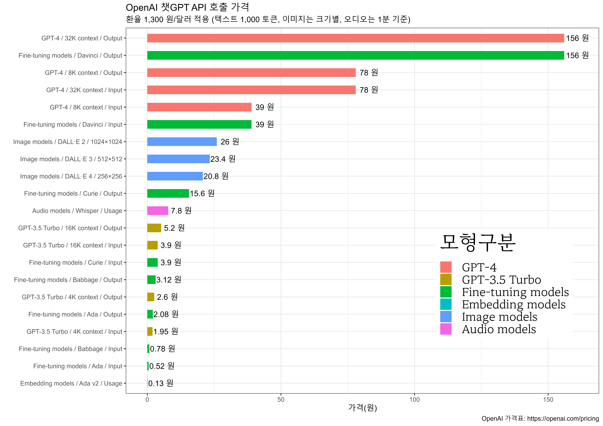

# Example: reuse your existing OpenAI setup
from openai import OpenAI
# Point to the local server
client = OpenAI(base_url = "http://localhost:1234/v1",
api_key = "not-needed")
system_message = """
You are an expert in SQL. The following table definitions have been provided to you. Please convert my query into an appropriate SQL statement. \n
CREATE TABLE Person(
ident text,
personal text,
family text
);
CREATE TABLE Site(
name text,
lat real,
long real
);
CREATE TABLE Visited(
ident integer,
site text,
dated text
);
CREATE TABLE Survey(
taken integer,
person text,
quant text,
reading real
); \n
"""
completion = client.chat.completions.create(
model="local-model", # this field is currently unused
messages=[
{"role": "system",
"content": system_message},
{"role": "user",
"content": "No explanation. Write only SQL query that returns - display the names of scientists"}
],
temperature=0.7,
)
print(completion.choices[0].message.content)17 오픈소스 SQL LLM
OpenAI 챗GPT는 2022년 11월 30일에 첫 공개되어 압도적인 성능에 모두가 놀랐으며, 이에 따라 GPT 기술을 개발한 구글도 서둘러 2023년 2월에 ’바드(Bard)’를 출시했으나, 기대에 미치지 못하는 성능으로 주가가 7% 하락하는 사건이 발생했다. 마이크로소프트는 OpenAI와 전략적 파트너십을 맺어 큰 성공을 거두었고, 페이스북으로 유명한 메타는 오픈소스 LLM, ’라마 모델(Llama Model)’을 출시하며 새로운 장을 열었다.
OpenAI GPT 모델은 뛰어난 성능을 자랑하지만, 모델을 호출할 때마다 상당한 비용이 들고, 특히 한국어는 토큰에서 상대적인 불이익을 받고 있다. 2023년 7월 기준으로 OpenAI는 GPT 언어 모델, 달리(DALL-E)로 대표되는 이미지 생성 모델, 위스퍼(Whisper) 오디오 모델, 임베딩 모델로 크게 나뉘며, 인기 있는 언어 모델은 성능은 다소 낮지만 빠르고 저렴한 GPT-3.5 터보와 성능은 높지만 느리고 비싼 GPT-4로 이원화되어 운영되고 있다. 그림 17.1 에서 1,000 토큰당 1달러, 환율 1,300원을 기준으로 가장 저렴한 임베딩 모델부터 GPT-4까지의 가격이 비교되어 있다.
마이크로소프트, 구글, 아마존, 애플, 엔비디아와 같은 소수의 대형 기술 기업을 제외하고, 메타가 촉발시킨 오픈소스 대형 언어 모델 프로젝트는 전 세계 많은 기술 기업과 개발자들에게 영감을 주었다. 이로 인해 OpenAI의 GPT 모델에 대항하기 위한 경쟁이 촉발되었고, 이제 몇몇 분야에서는 OpenAI의 GPT 모델과 비교할 수 있는 성능을 갖춘 모델들이 등장하고 있다.

17.1 오픈소스 LLM
오픈소스 LLM(Large Language Model)은 기계 학습을 통해 대규모 데이터에서 언어 패턴을 학습한 모델로 학습과정에서 SQL을 포함한 코딩 언어도 학습했다. 따라서, SQL을 포함한 각종 프로그래밍 언어 뿐만 아니라 다양한 자연어 작업을 처리할 수 있으며, 오픈소스로 제공되어 누구나 접근하고 사용할 수 있다.
OpenAI LLM과 오픈소스 LLM의 주된 차이점은 가격, 접근성, 수정여부에 있다. OpenAI LLM은 API를 통해서만 접근가능하고 다양한 방법을 통해서 비용을 지불해야만 된다. 반면 오픈소스 LLM은 그 자체로 자유로이 비용없이 사용할 수 있다는 점에서 차이가 있다.
OpenAI 모델은 특정 사용 조건과 API를 통한 접근 방식을 제공하며, 개발자가 모델 자체를 변경하거나 재배포할 수 없는 반면, 오픈소스 LLM은 라이센스가 개발자에게 모델 코드를 검토, 변경 및 재배포할 권한이 부여되어 더 많은 유연성을 제공한다.
오픈소스 LLM이 필요한 이유는 연구자와 개발자가 내부적으로 LLM 모델을 조사하고 개선할 수 있게 하여, 인공지능 분야의 발전을 촉진하고, 기업이나 개인이 상업적 제약 없이 모델을 사용함으로써 혁신과 창의적인 사례를 만들어낼 수 있으며, 오픈소스 LLM은 사용자와 개발자 간의 협력을 통해 모델을 빠르게 개선하고, 문제를 해결하여 투명성과 신뢰성을 높이는 것은 물론이고 모델 동작 방식에 대한 이해를 높일 수 있다. 챗GPT 모델이 공개된 이후 챗GPT가 간단한 계산문제와 논리문제를 해결하지 못한 것을 발견하고, 이를 해결하기 위해 오픈소스 커뮤니티 진영에서 새로운 프롬프트 기법인 한단계 한단계 차분히 생각해보자(“Let’s think step by step”)로 대표되는 생각의 사슬(Chain of Thought)을 제시되어 한단계 진보를 이뤄낸 것이 가장 많이 알려진 사례중 하나로 회자되고 있다.
SQL LLM은 특히 데이터베이스 질의어인 SQL을 생성하고 이해하는 데 최적화된 언어 모델로 자연어 프롬프트를 받아 SQL 쿼리로 변환하고, 필요한 경우 SQL 데이터베이스 시스템에 연결하여 바로 실행시켜 결과를 볼 수도 있다. 이를 통해 비전문가도 복잡한 대용량 데이터베이스에서 필요한 쿼리를 통해 정보를 쉽게 추출할 수 있게 되었다는 점에서 지금까지와는 다른 전혀 다른 세상이 열리게 되었다.
그림 17.2 에 보이는 것처럼 오픈소스 LLM은 사용자가 자연어 프롬프트를 입력하면 데이터베이스 스키마를 포함한 각종 임베딩 정보를 활용하여 SQL 쿼리가 자동생성된다. 다양한 데이터 소스와 벡터 저장소, 프롬프트, 오픈소스 LLM을 통해 SQL 쿼리가 생성되는데 고품질 SQL 쿼리를 생성하기 위해서 임베딩, 벡터 데이터베이스, SQL 특화 오픈소스 LLM, 프롬프트 최적화, 생성된 SQL 쿼리 후처리 등 다양한 기법이 유기적으로 결합된다.
17.2 오픈소스 LLM 개발환경
통합개발환경은 개발자가 쉽게 사용할 수 있도록 도와주는 도구로 오픈소스 LLM 통합개발환경이 오픈소스 커뮤니티를 중심으로 다양하게 제시되고 있다. LM 스튜디오, 올라마(Ollama) 등이 부각되고 있지만 올라마는 윈도우를 현재시점 제공하지 않기 때문에 LM 스튜디오를 통해 살펴보자.
17.2.1 LM 스튜디오
LM Studio는 사용자가 다양한 오픈 소스 거대 언어 모델(LLM)을 실험할 수 있는 데스크톱 앱으로 로컬 컴퓨터에서 비용 걱정 없이 LM Studio를 사용해서 OpenAI 호환 로컬 LLM 서버를 업무에 활용할 수 있다. LM Studio에서 오픈소스 LLM 모델을 로컬 서버에 배포하고 OpenAI에서 개발한 openai 패키지를 사용해서 OpenAI API와 동일한 방식으로 로컬 LLM 서버에 접근할 수 있기 때문에 기존 OpenAI API를 가정하고 제작한 소스코드를 재사용할 수 있다는 점에서 매우 유용하다.
먼저 LM Studio를 설치하기 위해서는 LM Studio 웹사이트에서 운영체제에 맞게 앱을 다운로드 받아서 설치한다. 좌측 돋보기 모양 아이콘을 클릭하여 검색창에 sql을 입력하면 sql을 학습한 LLM 모델을 찾을 수 있고 안내에 따라 다운로드하면 SQL 코드를 생성하는 AI 모델을 로컬 컴퓨터에 설치하게 된다.
좌측 메뉴에서 채팅 아이콘을 클릭하면, 다운로드 받은 LLM 모델을 상단 “Select a model to load”에서 골라 로드하면 OpenAI 챗GPT 서비스처럼 대화형으로 SQL 코드를 작성해 나갈 수 있다.

sqlcoder 34B LLM 모형 채팅좌측 채팅 아이콘 아래 양방향 화살표(↔︎)를 클릭하면 “Local Inference Server” 아래 “Start Server” 버튼이 있고 이를 클릭하면 오픈소스 LLM 모델을 서버로 배포하여 OpenAI 호환 API를 사용하는 것처럼 로컬 LLM 서버에 접근할 수 있게 된다. “Client Code Example”에서 curl, 파이썬(chat, ai assistant, vision) 예제 코드가 주석과 함께 제시되어 있어 이를 참고하여 후속 개발작업에 유용하게 활용할 수 있다.

17.2.2 자동화 프로그래밍
앞서 개발자가 직접 SQL 쿼리를 직접 작성하는 대신 SQL 특화된 LLM 모델을 사용하여 SQL 쿼리를 생성하는 것도 가능하다. 정확도 높은 SQL 쿼리를 작성하기 위해 명확하게 역할도 부여하고 데이터베이스 스키마 정보도 함께 제공하여 LLM 모델이 SQL 쿼리를 생성할 수 있도록 환경을 설정하고 자연어로 원하는 바를 지정하면 SQL 쿼리를 생성하고 관련 설명도 함께 출력하다.
주목할 점은 4GB 전후 크기를 갖는 SQL LLM은 생각보다 SQL 쿼리 생성이 눈높이에 맞게 되는 것은 아닌 것으로 보이며, 35.86 GB 크기를 갖는 sqlcoder LLM 모델은 SQL 쿼리 생성에 있어서 더욱 정확한 결과를 보여주고 있다. 물론, OpenAI GPT-4와 비교하면 속도를 비롯하여 여러가지 면에서 부족한 것으로 보이지만 가격이 무료이며, 다른 제약조건이 없다는 점을 생각하면 충분히 사용할 만한 수준이라고 생각된다. 또한, 오픈소스 SQL LLM은 지속적으로 발전을 할 것이기 때문에 작년과 비교하여 올해 비약적인 발전이 이뤄질 것으로 예상된다.
SELECT DISTINCT p.ident FROM person p JOIN visited v ON p.ident = v.ident JOIN survey s ON p.ident = s.person WHERE s.quant ILIKE '%radiation%';17.3 SQL LLM 평가
오픈AI GPT-4와 구글(Bard) 같은 AI 모델의 자연어 처리 능력이 급격히 향상되면서, 자연어로 질문된 내용에 대한 SQL 쿼리를 생성하는 ’텍스트-투-SQL’과 같은 다양한 자연어처리 활용에 대한 발전이 가속화되고 있다. 여러 접근 방식과 솔루션이 시장에 나오면서 어느 것이 가장 효율적인지, 어느 것이 정확한 답을 더 신뢰성 있게 생성하는지, 어느 것이 다양한 데이터셋에 가장 잘 적응하는지 평가하는 문제가 더욱 중요해지고 있다. 이러한 질문에 답하기 위해 오픈소스 산업과 학계는 여러 벤치마크를 제시했지만, 오늘날 가장 많이 사용되는 세 가지는 WikiSQL, Spider, BIRD(BIg Bench for LaRge-scale Database Grounded Text-to-SQL Evaluation)이다. (Pandey 2023)
WikiSQL은 Salesforce에 의해 2017년 말에 소개된 최초의 대규모 텍스트-투-SQL 데이터 집합이지만, 단순함이라는 큰 단점이 있다. 제공되는 모든 SQL 쿼리는 SELECT, FROM, WHERE 절만을 포함하는 매우 간단하며, 데이터셋 내의 테이블들은 다른 테이블과의 연결이 없다. WikiSQL로 훈련된 모델은 새로운 데이터베이스에서도 작동할 수 있지만, 간단한 자연어 질문에 대해서만 답할 수 있다. 이러한 이유로 최근 텍스트-투-SQL 분야의 연구는 더 복잡한 벤치마크에 초점을 맞추고 있다.
실제로 WikiSQL 리더보드에는 2021년 이전의 제출물만 있으며, 테스트 정확도 90% 이상을 달성한 여러 제출물들이 있지만(가장 성능이 좋은 제출물은 93%에 도달함), 이제 실무자들은 WikiSQL로는 턱없이 부족한 훨씬 더 복잡한 쿼리 생성에 초점을 맞추고 있다.
Spider 데이터셋은 WikiSQL 데이터셋의 단점 중 일부를 보완하려고 한다. 예일 대학의 11명 학생들이 1,000시간 이상의 노력을 통해 개발된 Spider 데이터셋은 복잡성과 교차 도메인성이라는 두 가지 중요한 요소를 도입한다. 복잡성 측면에서 SQL 쿼리는 WikiSQL이 한정된 간단한 SELECT와 WHERE 절을 넘어서, 더 복잡한 GROUP BY, ORDER BY, HAVING 절과 중첩된 쿼리를 포함한다. 또한, 모든 데이터베이스는 외래 키를 통해 여러 테이블이 연결되어 있어 테이블 간에 조인하는 복잡한 쿼리를 가능하게 한다. 교차 도메인성 측면에서 Spider는 200개의 복잡한 데이터베이스를 많은 도메인에 걸쳐 포함하여, 테스트 세트에서 본 적 없는 데이터베이스를 포함시켜 모델의 일반화 가능성을 테스트할 수 있게 한다.
Spider와 BIRD 데이터셋을 참조하여 상용 및 오픈소스 LLM 모델 성능을 평가한 (Rebei 2023) 논문을 통해 속도, 성공율, 정확도를 비교하였다. 실험 결과, 오픈소스 LLM 모델인 Code-LLama가 가장 높은 성능을 보였으며, 특히 Snowflake에서는 98.73%의 성공율을 보였다. 또한, Code-LLama는 다른 모델에 비해 2배 이상 빠른 속도를 보인 것이 인상적이다.
표 17.1 절대적인 모델 성능을 나타내는 것은 아니지만 SQL 쿼리문 생성에 오픈소스 LLM 모델도 결코 상용 LLM 모델이 뒤지지 않는다는 것을 보여주는 좋은 예시라고 할 수 있다.
| 상용 및 오픈소스 LLM 모델 성능 비교 | |||
|---|---|---|---|
| 모델 | 평균조회시간 | 성공율 | 정확도 |
| Code-LLama (Snowflake) | 5.47s | 98.7% | 81.6% |
| Code-LLama (Google SQL) | 6.46s | 97.8% | 82.7% |
| Mistral (Snowflake) | 5.67s | 96.5% | 79.6% |
| Code-LLama (Google SQL) | 6.50s | 96.1% | 79.4% |
| Starcoder (Snowflake) | 16.6s | 92.9% | 62.4% |
| GPT-4 (Google SQL) | 47.40s | 91.0% | 48.9% |
| Starcoder (Google SQL) | 19.32s | 87.9% | 51.0% |
| GPT-4 (Snowflake) | 47.44s | 87.4% | 45.6% |
| 출처: Rebei (2023) | |||
연습문제
객관식
-
문제: 오픈 소스 SQL LLM의 주요 장점을 모두 고르시오.
- A. 더 높은 속도
- B. 개선된 보안 기능
- C. 비용 효율성
- D. 자동 데이터 마이그레이션
-
문제: 오픈 소스 SQL LLM을 사용할 때 고려해야 할 요소를 모두 고르시오.
- A. 호환성
- B. 사용 용이성
- C. 맞춤 설정 가능성
- D. 지속적인 업데이트
-
문제: 오픈 소스 SQL LLM에서 SQL 쿼리 생성의 이점을 모두 고르시오.
- A. 빠른 쿼리 실행
- B. 자동 오류 수정
- C. 복잡한 쿼리의 간소화
- D. 데이터베이스 관리 자동화
서술형
- 문제: 오픈 소스 SQL LLM을 사용하여 SQL 쿼리를 생성하는 과정에 대해 설명하시오.
- 문제: 오픈 소스 SQL LLM의 사용이 데이터베이스 관리에 미치는 영향에 대해 설명하시오.